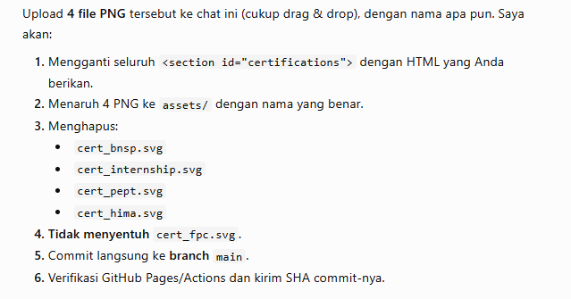
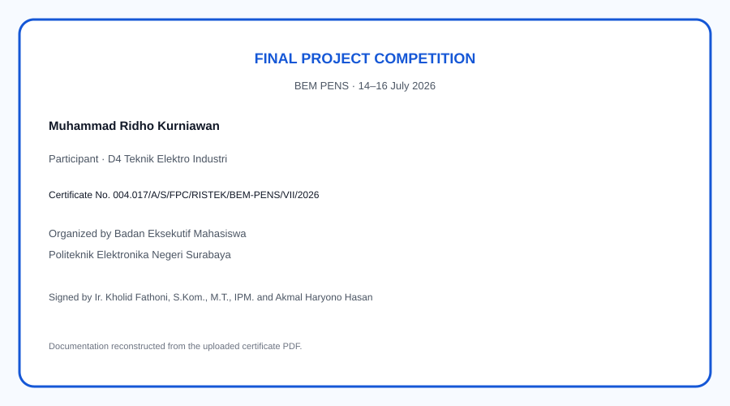

Certificate of Competence — Electric Power Distribution
Lembaga Sertifikasi Profesi PENS · Qualification: Consulting Team Head of Low Voltage Network Planning.
📄 Certificate Documentation

Scanned original certificate · click image to enlarge
Lembaga Sertifikasi Profesi PENS · Qualification: Consulting Team Head of Low Voltage Network Planning.
Section ELINS Tuban 3–4 · Electrical and Instrumentation Maintenance at the Finish Mill production area from 6 January – 13 May 2025, with final grade Baik (Good).

PENS Language and Culture Center · Overall score 480 with Listening 480, Structure 440, and Reading 520. Valid for two years.

Politeknik Elektronika Negeri Surabaya · Committee member of Student Camp Creative 2024 organized by HIMA Teknik Elektro Industri.

Teknik Academy · Technical training covering electrical calculation with Excel, load-flow analysis, short-circuit analysis, protection coordination, OCR relay setting, and ETAP-based power-system study.

D4 Industrial Electrical Engineering · Participant in the Final Project Competition organized by BEM Politeknik Elektronika Negeri Surabaya during 14–16 July 2026.
